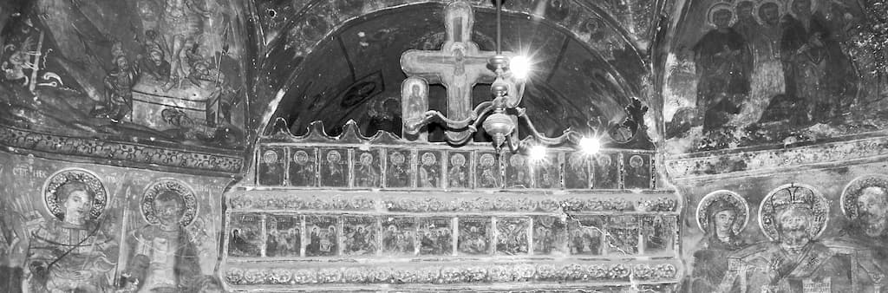

Să mergi „acasă”, când e vorba de Bucovina – are un înțeles poate mai profund decât al oricărui alt „acasă”, din toată lumea asta. Nu există un „acasă” mai legat de făptura lui Dumnezeu, decât „acasă” al bucovinenilor.
Veneam „acasă” – la vatra munților păduroși, ațintit cu urechea la poveștile vânturilor din cetini și ale valurilor de pâraie – și cu ochii la vulturii-cruci, ai celui mai senin, înalt și semeț văzduh: pajuri bătrâne cât lumea, purtând în trupurile lor zbârnâitul săgeților înțelepților și pletoșilor voievozi ai Moldovei. Veneam „acasă”, veneam să mă așez cu pieptul la rădăcina Bradului Lumii, avântat de pe stâncă drept în ceruri. Din câte-un Brad al Lumii a fost sculptată fiecare dintre mânăstirile ce-și iau zborul din poiene tainice, adunând pe pereții lor întreaga Carte a lui Dumnezeu, scrisă cu sfinți, albaștri precum mila din ochii Tatălui Ceresc – și verzi, precum lucrarea de proaspătă viață a Fiului de Tată…
[În paralel cu privirile, care-mi furnicau jur-împrejururile cerești – amintirea otrăvită lucra și ea: în 1775, Bucovina a fost „vândută”- trădată, la Hanul lui Manuc, de un dragoman, și dată Austriei Imperiale – și pentru ea și-a pus gâtu-n ștreangurile de mătase ale gâzilor Sublimei Porți martirul Grigorie al III-lea Ghica; apoi, în 1940, a trecut, peste trupul ei de crăiasă, creionul de dulgher al lui Stalin, sfâșiind-o în două… – a doua bucată a mătasei de duh fiind răpită în pântecele Baalului Sovietic… și-un rege nemernic a tăcut… În 1990-1991, bucata de duh hrăpită a fost, iarăși, „uitată”, afară din casa Țării, de guvernanții „decembriști”; în 1997, a fost iarăși „vândută”, de data asta Ucrainei… „Tratatul de bună vecinătate”… În 2003-2004, iarăși se trece peste rana sângerândă a Bucovinei, printr-un tratat nepăsător, cu Rusia „democrată și liberală”… De „vânzători” și de nume frumoase pentru „vânzare”, nu duce lipsă nici Țara Mare, nici Sfânta Bucovină…]
Da, așa veneam, căci așa purtam în suflet (eu, pribegitul pe meleaguri depărtate) Țara de Sus a nașterii mele. Veneam după ani mulți, să-mi număr averile fără de număr, strânse de moșii mei voievodali, pentru mine – veneam să-mi străvăd rădăcinile adânci și fermecate ale ființei. Dar averile mele le-am găsit cumplit risipite de nebuni, scăpați din balamucul cel mare al lumii dezdumnezeite și dând buzna, cu ghioaga, în raiul lui Dumnezeu – iar rădăcinile mi le uscaseră hulpavii și lacomii, iazmele de urât, care s-au născut (de parcă s-au clocit) și-au crescut (tainic și în beznele cele mai ferite de vedere) pe pământul sfânt de Bucovină – și-acum sfârtecă și otrăvesc de moarte sânul care i-a alăptat și le-a dat viață. Vinovată de paricid – viață.
…Săracă apă a Moldovei! – abia mai curge, de-atâtea puturoase și pestrițe gunoaie lumești, movilite pe margini, și de-atâtea șiroaie infernale, de uleiuri și păcuri, care-i pângăresc tot valul… Când am ajuns la Gura Humorului, am căutat cu ochii, pe vârf de munte, fostul pavilion regal de vânătoare, prefăcut, apoi, în casa de vacanță a seminariștilor cernăuțeni, până în 1948; sub Dej – azil de bătrâni – iar între 1976-1989, amenajat foarte cochet: motelul „Ariniș”. Sub noii dregători („postdecembriști”…) ai țării – ce a mai rămas? Niște scheletice ruine pământii și pustiite – și-acelea murdărite de pancarte cenușii: „Proprietate particulară”… De la Rege și de la Biserica Neamului – a ajuns la mârlanii „particulari”… – care se vor lăfăi în țarcul unei nou-cocoțate (pe ruine istorice!) vile cu turnulețe de tinichea… Venetici – căci 75 % din populația (activă…) din Gura Humorului o formează șomerii – iar humorenii get-beget au trecut de 60 de ani (copiii lor, ca pretutindeni în România, s-au spulberat în zări străine): asistă, neputincioși, resemnați, la propriul apus de soare… și la înstrăinarea și distrugerea sistematică a rădăcinilor orașului lor.” Numai umbra spinului/La ușa creștinului”… Străinii, cu mașini mari, lăfăite, își cracănă Mercedesurile drept în mijlocul șoselei, ca să ceară informații pe-ndelete, disprețuind cu grosolănie pe „băștinașii” care ar vrea, și ei, să treacă…
O iau spre Voroneț. Mânăstirea… Unde-i mânăstirea? Auzisem eu că un individ fără Dumnezeu, pe nume Ion Țiriac, voise să facă, vis-à-vis de sfinții albaștri ai Voronețului – motel, cu grătare de mititei în față – dar preoții Bucovinei, în frunte cu prea-sfințitul Pimen, l-au oprit pe vandal. Dar, acum, unde-o fi mânăstirea, dacă tot a scăpat de motel și de fumul de mititei? Nu se mai vede, de tarabele supraetajate, cu izmene „străine”, piepteni și mărgele (bineînțeles că „străine”! – biet românul a ajuns ca africanii jefuiți și robiți colonial, cumpărați doi la o mărgică, din secolul XVIII) – nu se mai aude zvonul rugăciunii, de țipetele precupeților și corturarilor străini (cu ghilimele și fără…): germani, țigani, unguri, englezi – toți în chiloți, în fața sfinților și voievozilor de pe ceruri – toți strigă și chirăie, ca-ntr-un talcioc zănatic – nici un respect față de bătrânele ziduri sfinte, înălțate de Preasfântul Ștefan… „Zidul vechi al mânăstirei”, cel de-mprejmuire, se ițește bolnav, cutremurat de jale, din tot acest Babel al zarafilor lumii, strânși la Templul Cerescului Tată – și nu se ivește biciul lui Hristos, de nicăieri… Ajung la intrarea uriașelor porți de lemn. Afiș mare: „Intrarea – 40.000/20.000 de lei”. Tu, din Țara Românilor – să trebuiască, pentru a intra în casa cea sfântă a părinților și moșilor tăi, a Dumnezeului tău – să plătești… De ce? Răspunsul îl voi afla, de cum voi trece pragul porții: două ziduri exterioare, din patru ale mânăstirii – șterse! Pe celelalte două – abia se mai zăresc, umbre vagi, sfinții albaștri. Ce cataclism cosmic a șters, fără îndurare și întoarcere(doar firave începuturi de restaurare…), sfinții Voronețului? Murmură o bătrână și cernită călugăriță, jenată: „Nu ne prea dă fonduri Ministerul, maică, pentru restaurare… și ne nevoim să strângem, cu paraua, de la dumneavoastră…” Acum știu cum se numește cataclismul… da, știu.
La fel stau lucrurile și cu Sfinții Verdelui de Cetină ai Mânăstirii Humorului. Logofeții, vornicii și postelnicii îngropați în incintele sfinte – s-au scufundat, de rușine și amar, cu încă 10 stânjeni, în pământ… „-Așa-i la toate mânăstirile – să vă duceți și să vedeți: Moldovița, Sucevița… Numai la Putna e mai bine, că a fost pe-acolo președintele, cu aniversarea…” – murmură alte și alte glasuri de călugărițe și mirence, dintre „artizanatul” multicolor, frumos înflorat, atârnat pe gardurile din jurul mânăstirii – și pus la vânzare cu prețuri între 500.000 de lei – și cât o da Dumnezeu… Auzeam, din departe: „Ștefane, Măria Ta,/ Tu la Putna nu mai sta/ (…) Lasă grija sfinților/ În sama părinților,/ Clopotele să le tragă/ Ziua-ntreagă, noapte-ntreagă,/ Doar s’a-ndura Dumnezeu,/ Ca să-ți mântui neamul tău!”…
Ospitalitatea proverbială a voronețenilor, ori a mânăstirenilor Humorului… Da, a fost cândva, impresionantă (deștepții zilelor noastre strâmbă din nas: „primitivă, tribală…”): te vedeau, de la poartă, trecând pe uliță, în zăpușeala serii de vară, și-ți spuneau, din tot sufletul lor duios de-atunci, întinzându-ți cana smălțată, plină ochi cu apă ca gheața, proaspăt scoasă din fântâna de sub brad, ori fag, ori mesteacăn: „-Ia, maică, ți-o fi sete, pe soarele aista…” Acum, din două în două case, afiș la poarta ferecată: „Pensiunea Suzana” (sau Vasilică, Gina, Sile…), sau „Cazare”. Stă câte o babă (cu bărbia tremurând) până și pe calea ferată, aținând calea turiștilor prăfuiți cu o pancartă, ca la manifestație: „Cazare”… Cazare „La Moartea” – du-te, maică, acasă, că te caută… La ce-ți mai trebuie banii noștri, că nu te-ngropi cu ei, Doamne iartă… Pe calea spre munte, rânjind, blochează cărarea muncitorii de la niște tractoare și freze: să facă loc, pe Vadul Banilor, spre două cabane ale unor țărani, deveniți, peste noapte, mari „rechini” – afaceriști: „Floarea de colț”, „Floarea de iris”… Frumoase nume. Sticla de apă minerală: 40.000 de lei bucata. Muncitorii de la freze nu se omoară lucrând: blochează drumul, pentru a-i șantaja pe turiștii cu mașini și a le umfla banii. Euro, vezi bine… Eu nu trec.
A doua zi, întărâtat, o iau, iarăși, spre Voroneț. Nu știu ce vreau: am sufletul otrăvit – mânie, jale, amărăciune, dispreț, furie neputincioasă…” -Din asta trăiesc amu oamenii – închiriază la turiști. Nu lasă ei nici vaca să moară de foame, ori păpușoiul neprășit – da’ nici nu se înghesuie la muncă. Vând – vând cam tot…” – murmură, mereu, călugărițele cele pe veci cernite.” -Cui vând?” „-Dumnezeu știe cui, maică. Străinilor, cui să vândă? Cine au bani decât străinii?” – se încovoiau de amărăciune vocile mireselor lui Hristos… La stihurile disperatei Doine, a martirului de Românie-românește – Eminescu: „Cine-au îndrăgit străinii/ Mânca-i-ar inima câinii…” – trebuie adăugate, degrabă, încă două: „Iar cine-au îndrăgit banii/ Mărunți-l-ar șobolanii”…
Ajuns la ieșirea din Gura Humorului, văd lângă drum, făcând, cu mâna, cam sfios, semnul opririi – un călugăr bătrân, cu barba albă și lungă, ca a Sfântului Nicolae. Opresc mașina și-l iau. „-Unde, părinte?” „-La Sihăstria Voronețului, dacă vi-i voia…”. „-Sihăstria? Unde-i asta?” „-O luați pe lângă mânăstire, la stânga, ocoliți, apoi tot dreapta – vreo doi kilometri”. „-Bine, părinte”. Drum frumos, după mânăstire, dar cu bolovani. Poiene parcă acum deșteptate din somn, pădure curată, de brad. Și, deodată, codrul se deschide într-o luminare largă: pe dreapta, văruită proaspăt, micuță ca pentru pitici – ca un bob de rouă în mijlocul ierbii umbroase: sihăstria (cu bisericuță de-un deget, căsuță pentru chilii, fântâniță acoperită și cuhne). „-Aici, părinte?” „-Aici, fiule.” „-Câți părinți călugări sunt la sihăstrie?” „-Un preot-călugăr și trei călugărițe”. Părintele se dădu jos – și intră, cu pas încet, dar spornic, pe portița sihăstriei celei pline de lumină. ( Îl cheamă părintele Cocan-Cleopa, și, pe unde pășește, răsare lumină. Vorbește în pilde și stihuri, precum un nou Dosoftei. A făcut trei facultăți, a fost el la lume, și a trăit lungă vreme, printre toți oamenii, fel și fel – dar nu-i mai place cum merg crugul vremilor și mintea românului. Și s-a hotărât s-aștepte, acum, să vină lumea la el, de va simți nevoia. Și lumea vine – sfioasă, cam rară, dar vine! Și cine vine la sihăstria lui, cu-adevărat găsește înțelepciune, sfat, alinare și iubire părintească – și, mai ales, rugăciune arzătoare către Domnul, pentru alinarea necazurilor celor aflați, încă, pe acest pământ, și pentru iertarea păcatelor, celor duși spre alt tărâm. Viață lungă și sănătoasă, preacinstite părinte, căci ești adânc „trebuitoriu” la aceste vremi!).
Pârâul clocotea la o zvârlitură de băț – poieni largi, și munte în toate părțile. Drumul de bolovani cotea apoi, la 2-300 de metri – și chiar la cotul drumului, se zărea o casă de piatră. Frumos. A scăpat, aici, Țara Bucovinei, Arboroasa, Țara Fagilor – de otrava oamenilor fără Dumnezeu. Aici stă Dumnezeu și se hodinește de răutățile omului. Hai să vedem ce-i și după cotul drumului!
Mașina pornește – iar sufletul se pregătește să întâmpine viziunile unui codru des, nepângărit, curat ca lacrimile păsărilor. Dau cotul și – cât pe ce să mă lovească damblaua: cât se vede cu ochiul liber, numai parcele înțărcuite, cabane, și vile, și corturi în fața vilelor – pe toate coastele muntelui. Mărturisesc smerit că mi-au scăpat de pe buze câteva vorbe fără legătură cu Sfânta Ortodoxie – și-am început să mă strecor printre țarcuri. Dumnezeu înțărcuit cu sârmă ghimpată și cu garduri dintr-un fel de sulițe. N-ai loc să întorci mașina. Hăt, dincolo de pirpiriul Ocol Silvic (la ce bun?) – se strecoară mașina – și-o iau înapoi, spre Sihăstrie. Opresc și mă arunc, din mașină, drept pe pajiștea din fața Sihăstriei Voronețului. Acum bag seamă, abia, că pe malul pârâului sunt mormane de nisip, și gropi de var, și planșee de beton, stivuite. Iar dincolo de ele, cât ține malul – pungi cu gunoi – sau, pur și simplu, gunoaie menajere în putrefacție.
Într-un târziu, tălăngile câtorva zeci de vaci îmi trezesc creierul din amorțeală. Văcarul (e al obștei Voronețului), peticit la straie, suriu la păr, cu ochi inteligenți, dar sclipind, parcă, a continuă frică și disperare – se apropie de mine: „-Ziua bună…”- șovăi el, cuviincios. „-Bună ziua” – îi răspund. Și intrăm în vorbă, căci se vede că bietul om are râuri largi de amar în suflet, și nu are spre cine le vărsa – iar eu, cel puțin, nu-i sunt dușman cunoscut… Când m-o cunoaște de dușman – o mai vedea… Aflu de la el că poienele și munții de-aici fuseseră, dar nu mai sunt – ai obștei Voronețului. S-a lăcomit, întâi, un cioban al locului – și a vândut (pe bani buni, zicea el, pe-atunci) un colț de munte și pădure – apoi, toți din Voroneț îl urmară – de n-a mai rămas liberă de vânzare decât marginea drumului forestier – „abia mai au ce lua în gură vacile, săracele – că le plimb toată ziua până în vârf și înapoi, și tot flămânde rămân – ciulinii de pe margine, atâta mai au de mâncare” – sclipesc, înspăimântați, ochii omului. El a fost, cândva, miner („brigadier-șef”, zice el, cu mândrie – „da’ munceam cot la cot cu ortacii, nu așa!”) la Bălan, dar acu’, la bătrânețe, s-a tras încoace. Minele s-au închis, ca să nu-i mai supere pe… „-Din Voroneț ești, bade?” „-Cum nu, d-apăi de unde? Voronețean de-al lui Naharneac”. Și-ncepe a-mi zice toată viața și necazurile lui și ale familiei lui (asta, pentru că i-am zis că eu sunt humorean: „-Da? Al cui ești mata, nu te supăra?”. I-am spus – și s-a luminat de recunoaștere, dintr-odată: „-Așa, dară! – știu, cum nu?!”). „Și cui au vândut voronețenii pământul obștei?” „-Cui! Pocăiților!”. „-Toți de-aici, toți de la cabane și vile, sunt pocăiți?” „-D-apoi cum? Toți, domnule! Suedezi, nemți – iehoviști, adventiști, baftiști – tot felul! Și colo, peste pârâu, umblă vorba că-și înalță casa lor de rugăciune”. „-Cum, domnu’ Naharneac? Față în față cu sihăstria?” – întreb, năuc de-a binelea. „-Față în față, d-apoi cum!” – încuviință omul. „-Și aruncă, și turiștii ăștia, tot cât și pocăiții, bată-i să-i bată, aruncă în dreapta și-n stânga, fără de grijă, cu resturi, cu pungi cu gunoaie împuțite, ard pământul și iarba, doboară copacii de tineri – mânia lui Dumnezeu, domnule!” – se jeluia bietul om. „-Înalt-Preasfințitul Pimen a rânduit sihăstria de-aici, amu doi ani, simțea el primejdia năvalei hoardei ăstora. Vrea să cumpere pământul, la loc, și să-l pună sub paza Bisericii – da’ nu mai vând ăștia înapoi, nu-i chip!”. Bunul Naharneac se sfii să spună despre faptul că înjunghierea sfintelor locuri s-a făcut pe la spate, chiar de oamenii locurilor – românii „frați cu codrul”… lăcomiți peste fire. (Sărăcia românilor? Răzeșii acestor locuri n-au fost cooperativizați niciodată, n-au știut ce-i aceea sărăcie! Deci – lăcomia, bat-o pustia!). Va să zică, de la Costineștii, ajunși ai MISEI lui Gregorian Bivolaru, și până la Sihăstria Voronețului – România a ajuns paradisul sectelor nelegiuite ale lumii! Noi, cea mai ortodoxă dintre țările Ortodoxiei! Da, neisprăviților și lacomilor acestui pământ românesc – strângeți de gât până și sihăstriile – cu juvețe din import! Așa-i, nu v-ajunge că dărăpănați, ca pe bordeie, sfintele mânăstiri – o, ce dușman cumplit, al conștiințelor voastre paricide, este SIHĂSTRIA – sihăstria celor mai înalte și fierbinți rugăciuni de pe fața pământului! „-…M-am certat cu primarul și ieri (continua plângerea lui Naharneac), am ajuns și la prefect – unde să pasc vacile? Și când am vrut să strâng semnături de la voronețenii mei, pentru vacile lor, pe hârtia făcută de mine, către prefect – din 300 de familii, abia am strâns 59 de semnături… Mai mare rușinea – s-au lăcomit la bani, și-acuma-s lași!” – răbufni văcarul Naharneac, și trase o sudalmă, din adâncul inimii – dar imediat își ceru iertare. „-Uite, alaltăieri a trebuit să duc la abator o vacă, săraca… se otrăvise, mâncând din gunoiul de pe malul pârâului, și paralizase. Astăzi, ăștia (și arătă spre zona sectanților), cu mașinile lor, mi-au lovit o vacă – și când am vrut să iau numerele de la mașini, șase dintre ei au sărit să mă bată! Abia am scăpat cu fuga… Mânia lui Dumnezeu, domnule… mânia lui Dumnezeu” – și, obosit parcă de moarte, murmură obidit, Naharneac-văcarul obștei: „-Unde să mai pasc eu vitișoarele astea, săracele?… Dacă veniți la anu’, domnule, n-o să mai aveți unde vă așeza jos, de țarcurile străinilor și pocăiților ăstora… iară eu n-oi mai avea pe unde să mân vitișoarele, de-o mai rămâne vreuna cu viață, de varvarii ăștia! Greu, greu de noi…”
Da, îmi zisei eu – ne-au ajuns blestemele turcilor, tătarilor, leșilor, ungurilor – pe care voievozii noștri i-au spulberat în bătaie, spre a păstra moștenirea sfântă de pământ, neatinsă, pentru noi, urmașii urmașilor lor – pentru ca noi s-o vindem, acum, ca pe stambă, la cot – și s-o risipim, ca pe prafurile pustiei… Să vinzi toți munții, și poienele, și pâraiele, și râurile, și tot raiul pământului! – de parc-ar fi colbul de piatră al Saharei! Mai rău… mult mai rău. Negrii și arabii își iubesc profund, își divinizează – deșertul. Își varsă tot sângele – pentru deșert. De ce? Nu pentru petrolul de-acum, ci pentru că-i AL LOR, hotărât de Dumnezeul lor Allah, din vecie, pentru vecie!!! De la moșii lor negri, moștenire!!!
Jeluirea, ca o litanie sălbatică, a văcarului Voronețului, Naharneac-Raicu (singurul om, rămas întreg, dintr-o altădată întreagă, mândră obște răzășească, întemeiată de rămuroșii voievozi ai Începutului) – o s-o port în urechi până și dincolo de mormânt. Îmi venea să strig, în tăcerea munților, care se pregăteau să ascundă taina cea mare a asfințitului: „Ce-ați făcut cu Țara Sfintei Doine, neisprăviților?”
Și iarăși am pornit la drum – de data asta, înfundându-mă adânc, în creierii munților – spre Vatra Dornei. Sunam în gând: „Din Boian la Vatra Dornii/Au umplut omida cornii…” Inima-mi era strânsă: toate aceste frumuseți, unice-n lume, se vor vinde, bucată cu bucată, în anii care urmează. Pe vremea lui Eminescu, românul putea da vina pe rege ori pe împărat străin – acum, pe cine să mai dea vina? Pe lăcomia lui! Singur se strânge de gât! „Și-i străin în țara lui”… S-a înstrăinat românul de raiul lui și l-a îndepărtat, și l-a pierdut pe Dumnezeu… l-a vândut pe Dumnezeu, la talciocul infernal al lumii ăsteia. Precum Iuda, a devenit românul – vânzându-și Dumnezeul și Neamul(care nu-i numai trecut și prezent, ci și viitor, totdeodată!) și pe Voievozii Luminii – altor iude…
Am ajuns și la Vatra Dornei. Nu mai este ce era (unde-s căprioarele din parc?) – dar s-a făcut o catedrală, de vreo câțiva ani. Înaltă, maiestuoasă, cu marmură albă și neagră… Cam rece… Să nu zică frații catolici că nu știm ridica și noi catedrale… Am intrat. Picturi neo-bizantine m-au întâmpinat, severe (este și la demisol biserică, pictată într-un stil mai vechi, mai cald, mai naiv-românesc). M-am fâstâcit de răceala înaltă a pereților pictați – și m-am lăsat într-o strană, la dreapta altarului. De pe peretele dimpotrivă, mă privea țintă, înnegurat de supărare, Dreptul Judecător-Hristos. Din stânga Lui, Maica Sfântă îi grăiește, pe albul unui pergament: „-Primește rugăciunea Maicii Tale, milostive!” – iar din stânga Lui, smerit, dar hotărât, Înaintemergătorul Ioan Botezătorul ne ține partea, pe alt pergament alb: „-Ascult-o și pe-a mea, CUVINTE, primește pe robii Tăi și le dăruiește iertarea păcatelor!”
M-am umilit adânc în strană, lăcrimând, înfricoșat, pentru mine, nemernicul – și pentru neamul meu păcătos, vinovat în fața Lui. Atunci am băgat de seamă că, din înaltul catedralei, de la balcoane, se înălța cântarea liturghiei catolice, în limba germană. „-Am pus liturghia pe casetă, în semn de respect față de turiștii germani din Vatra Dornei” – mă lămurește, la ușă, o călugăriță cam țeapănă, cu o nepăsare stingheritoare.
Mă gândesc: Dacă eu aș vizita Köln-ul – în domul de-acolo mi-ar pune slujba ortodoxă, pe românește? Și-apoi, aș fi făcut eu mii de kilometri, ca s-ascult sfânta slujbă ortodoxă – când aș putea-o asculta, vie precum Învierea, și desăvârșit curată, de lacrimile preotului român, la mine – „acasă”? „Popa nost’ ” săracul… tot sufletul și-l pune în slujirea lui Dumnezeu, în biserică…
Avem noi, românii, un fel de a fi „toleranți” – care frizează slugărnicia cea mai absurdă. Mi se pare mie, ori cam nătâng ai ajuns, popor român al lui Dumnezeu?! Știu bine că te vei deștepta, așa spun toate scripturile vechi ale proorocirilor despre neamul românesc (proorociri de-aici și de peste mări și țări) – dar eu nu voi mai fi în viață atunci, să-ți văd deșteptarea din somnul otrăvit… Nici copiii mei, poate. Poate doar „urmașii urmașilor mei”… de-or mai fi dintr-ăștia… Pân-atunci, voievozii se trag în ceață și umbră întunecată, întristați până peste poate… „Ștefane, Măria Ta – iartă nouă, celor orbi la Lumină și surzi la chemarea Tatălui!”…
Ieșind din catedrală, un strop de ploaie mă lovi, crâncen, în obraz. Plângea, pesemne, crâncen-amar, un sfânt voievod din ceruri – aplecat de acolo, din nevăzut, peste ocina lui preasfântă – ajunsă, acum, otrăvitul, înjositul rai al Bucovinei…
De câte ori mai trebuie să fii, oare, vândută, Bucovină-soră-cu-Hristos, până să te mântui în hotarele cerești ale sufletului tău cel adevărat?

Comentarii